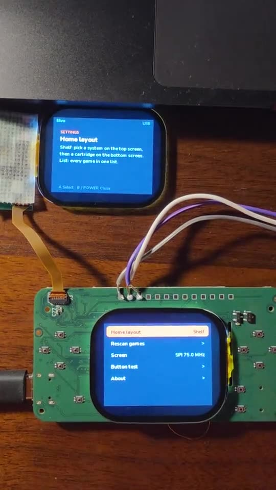
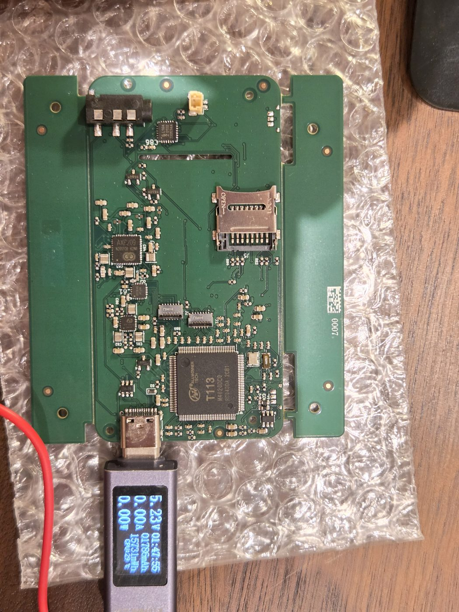

Everything that's happened so far.
Newest first. Each post is a short write-up of what I did, what worked and what didn't. The bar below shows where the project is right now.
Themes, and NEON on the real thing
The system now has four themes. Each one changes the layout and how consoles are drawn, not just the colours. NEON is the first one I filmed on the prototype.

lilvo system 1.0
Launcher, 12 consoles, save states with screenshots, close-the-lid saving and a web page for files. Everything since Oct 19 rolled into one install.

The enclosure, layer by layer
Five shell parts, a steel hinge pin and a spring detent, all inside 18 mm. An exploded view of how it goes together.

Inside the boards
Three boards, one chip, two independent screens. How the electronics fit under a 2-inch screen, and why the lid carries almost nothing.

Managing games from a browser
Plug in USB-C, open lilvo.local, drag games in. Covers, saves, BIOS files and system updates all live on one web page served by the console.

Ordered the Beta boards
A 6-layer main board that should be close to final, plus a new lid board and hinge cable. Two independent reviews went into it.

It's a handheld now
Board, both screens and the hinge cable in one printed shell, held together with tape. For the first time I can hold it, play and close it.

The launcher on real screens
The home screen I had been mocking up now runs on both screens of the bare board. 3D consoles are drawn in software, no GPU.

First power-on
The first prototype boards came back. Voltages good, Linux boots, both screens show a test pattern at 60 fps. Same night: my first post on r/SBCGaming.

Proving the chip on a dev board
Before trusting my own boards, I ran the whole software stack on a MangoPi dev board and wired a real screen to it. 75 MHz, 60 fps, no dropped frames.

Where it started
I knew very little about hardware. I picked a chip, two small screens and a shape, then spent a month on boards, hinges and printed shells.